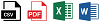

Registreer, organiseer, bewerk en/of exporteer records.
Mogelijk heeft u niet de rechten om alle hieronder beschreven opties te gebruiken.
Voor meer informatie, zie ZyLAB ONE Information Management Add-on.
Registreer
Zorg dat nieuwe records in het juiste dossier terecht komen en op de juiste manier worden gearchiveerd.
Klik op
 (Nieuw), selecteer een recordsjabloon (recordtype, bijvoorbeeld Contract) en een archiveermethode (web upload of scan), voeg de juiste bestanden toe en klik op Registreer.
(Nieuw), selecteer een recordsjabloon (recordtype, bijvoorbeeld Contract) en een archiveermethode (web upload of scan), voeg de juiste bestanden toe en klik op Registreer.Vul eventuele velden (metadata) in, zoals afdeling, dossier, advocaat (deze zijn afhankelijk van het gekozen recordsjabloon). Klik op Registreer.
De bestanden zijn nu op de juiste plek gearchiveerd.
Let op: Wanneer u een registratie heeft aangemaakt van een papieren document, is er ook een Voorblad met barcode of Dymo Label aangemaakt.
Klik op
 (Barcode) om het Voorblad te openen, controleren en printen.
(Barcode) om het Voorblad te openen, controleren en printen.Klik op
 (Print Dymo Label) om het Dymo Label te printen.
(Print Dymo Label) om het Dymo Label te printen.Organiseer
Groepeer door een kolomkop naar boven te slepen. U kunt kolomkoppen ook weer terug naar de tabel slepen.
Sorteer (oplopend/aflopend) door eenmaal in een kolomkop te klikken.
Toon kolommen wel/niet via de knop Toon Velden (linksonder op de pagina).
Bewerk
Wijzig het record; Klik op (Edit). Niet alle informatie mag na registratie gewijzigd worden.
Verwijder het record; Klik op
 (Delete).
(Delete).Bekijk het document dat behoort bij dit record in ZyLAB Legal Review; Klik op
 (Toon).
(Toon).Kopieer het record; Klik op
 (Kopieer).
(Kopieer). Let op: Bij default, Kopieer is niet geactiveerd (key="EnableRegistrationCopying=false").
Neem alstublieft contact op met uw Administrator voor activering (zet key op true).
Exporteer
Exporteer alle records naar een van de volgende formaten: .csv, .pdf, .xlsx of .rtf.
Klik op het juiste icoontje linksonder op de pagina.
